Pred izumom · igra
Navier–Stokes, 1845
Tekočina, ki se upira: 23 let v čevljih treh inženirjev in matematikov
Osnutek R1 · 30. 10. 20261. dejanje · 1821 · Pariz
Popolna tekočina
Zgodba
Prolog: inženir mostov
Pariz, 1821. Ti si Claude-Louis Navier, star 36 let. Rodil si se 10. februarja 1785 v Dijonu. Ko ti je leta 1793 umrl oče, te je k sebi vzel prastric Emiland Gauthey, inženir mostov in kanalov. Pozneje si uredil in izdal njegova dela. Od leta 1819 predavaš mehaniko na šoli za ceste in mostove v Parizu.
Si inženir državnega korpusa za ceste in mostove, Ponts et Chaussées. Računaš mostove, kanale in cevi za vodo. Inženirji pretok vode po ceveh in kanalih računajo z obrazci, ki so jih iz meritev sestavili tvoji predhodniki. Obrazci delujejo, a nihče ne zna povedati, zakaj imajo takšno obliko.
Maja 1821 si na Akademiji prebral razpravo o prožnih telesih. Trdno telo si predstavljaš kot množico molekul, ki se privlačijo in odbijajo, ko se razdalje med njimi spremenijo. Iz tega si izpeljal enačbe za upogib in raztezanje. Zdaj te zanima voda.
Viri (2)
MacTutor: Claude-Louis Navier · On the development of the Navier–Stokes equation by Navier (Revista Brasileira de Ensino de Física)Zgodba
Enačbe, ki ne poznajo upora
Leta 1738 je Daniel Bernoulli v knjigi Hydrodynamica razložil tok vode z ohranjanjem »žive sile«. Leonhard Euler je leta 1755 v Berlinu predstavil, leta 1757 pa objavil splošne enačbe gibanja tekočine. Za vsak majhen delček tekočine velja: masa krat pospešek je enako sili tlaka okolice in teži. Dodal je še enačbo, ki pove, da se tekočina nikjer ne izgubi in ne nastane.
Eulerjeve enačbe so lepe in splošne. Opisujejo pa »popolno tekočino«, ki nima nobenega notranjega trenja.
Jean le Rond d'Alembert je že leta 1752 v eseju o uporu tekočin izračunal, da tekočina telesu, ki se giblje skozi njo, ne nudi nobenega upora. Rezultat je zavrnil kot »v nasprotju s poskusi«. Leta 1768 je zagonetko izrecno zastavil vsem geometrom: telo, ki je spredaj in zadaj enako, v takšni tekočini ne čuti upora. Odgovora ni nihče našel.
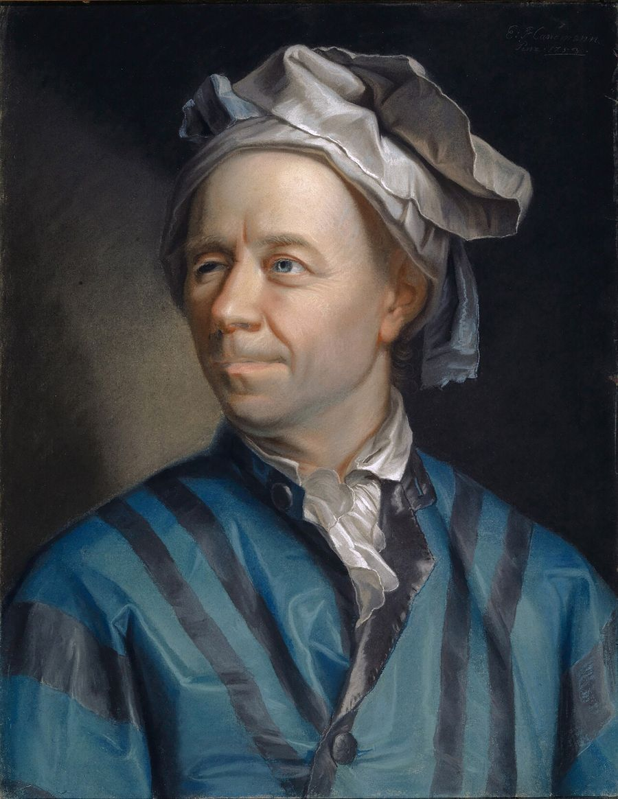
Viri (3)
MacTutor: Daniel Bernoulli · L. Euler, Principes généraux du mouvement des fluides (E226, 1757) · Genesis of d'Alembert's paradox and analytical elaboration of the drag problem (arXiv:0801.3014)Izziv
Upor, ki ga ni
Ob Seni gledaš čoln, ki ga konj vleče po kanalu. Ko konj obstane, čoln upočasni in obstane. Voda ga zavira.
Kaj bi naredil ti, zdaj, s tem, kar imaš? Po Eulerjevih enačbah krogla, ki se enakomerno giblje skozi mirno vodo, ne čuti nobenega upora. Vsak čolnar ve, da to ni res. Zakaj račun da nič in kaj v enačbah manjka?
Odgovor je lahko z besedami. Formule niso potrebne.
Tvoj odgovor → napiši ga vodniku igre v polje »Tvoje sporočilo« v panelu na levi (na telefonu spodaj). Piši s svojimi besedami, tudi pol ideje ali grobo skico je dovolj. Vodnik te bo vprašal naprej, namig pa dobiš samo, če ga prosiš.
Namig 1
Primerjaj med in vodo. Kaj čutiš, ko z žlico počasi vlečeš skozi enega in drugo?
Namig 2
Nariši tokovnice okoli krogle, spredaj in zadaj. Kje je tlak večji, če so slike spredaj in zadaj zrcalne?
Namig 3
Kakšno silo lahko po Eulerju en delček vode da sosednjemu, in v katero smer? Ali ima voda v kozarcu na enakomerno vozečem vozu kakšno trenje?
Razkritje
Kar Euler izpusti
V popolni tekočini sosednja delčka drug na drugega delujeta samo s tlakom, ki je vedno pravokoten na stik. Sile vzdolž stika, s katero bi hitrejša plast vlekla počasnejšo, ni. Okoli telesa, ki je spredaj in zadaj enako, je zato tudi tok spredaj in zadaj zrcalen. Tlak, ki telo potiska nazaj, se natančno izniči s tlakom, ki ga potiska naprej. To je d'Alembertov paradoks.
V resnični vodi plasti, ki drsijo druga ob drugi, druga drugo vlečejo. Isaac Newton je to domneval že leta 1687 v drugi knjigi Principia: upor, ki nastane, ker tekočina ni popolnoma »spolzka«, je sorazmeren s hitrostjo, s katero se njeni deli ločujejo. Trenje ni odvisno od hitrosti same, ampak od razlike hitrosti sosednjih plasti. Voda, ki se giblje kot celota, ga nima.
Za telesom se tok v resnici odtrga in pusti vrtinčasto sled. Kako trenje povzroči odtrganje, je pojasnil šele Ludwig Prandtl leta 1904. Ti se odločiš za prvi korak: notranje trenje boš dodal v Eulerjeve enačbe.
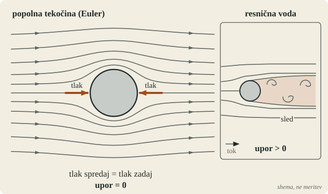
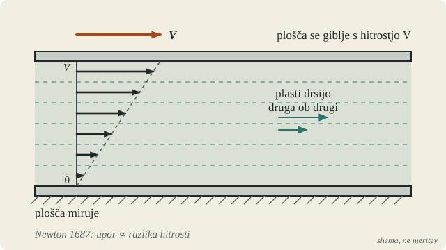
Viri (3)
Genesis of d'Alembert's paradox and analytical elaboration of the drag problem (arXiv:0801.3014) · L. Euler, Principes généraux du mouvement des fluides (E226, 1757) · L. Prandtl, Über Flüssigkeitsbewegung bei sehr kleiner Reibung (1904), German History Intersections2. dejanje · 1821–1822 · Pariz, Académie des sciences
Razprava za Akademijo
Zgodba
Molekule v vodi
Pri prožnih telesih si molekulam dovolil, da se privlačijo in odbijajo, kadar se razdalje med njimi spremenijo. V vodi pa se molekule premikajo druga mimo druge in razdalje se ves čas spreminjajo. Voda nima oblike, ki bi si jo zapomnila.
Imaš Eulerjeve enačbe za majhen delček vode in Newtonovo domnevo o uporu med plastmi. Manjka ti člen, ki bi trenje zapisal za vsak delček, kjerkoli v tekočini in v vseh smereh. Marca 1822 boš rezultat predstavil Akademiji.
Viri (2)
MacTutor: Claude-Louis Navier · On the development of the Navier–Stokes equation by Navier (Revista Brasileira de Ensino de Física)Izziv
Trenje v enačbi
Kaj bi naredil ti, zdaj, s tem, kar imaš? Imaš Eulerjevo enačbo za majhen delček vode: masa krat pospešek je enako sili tlaka in teži. Kako bi dodal silo notranjega trenja? Od česa je odvisna in kakšno obliko ima v enačbi?
Lahko razmišljaš o tankih plasteh, o majhni kocki vode ali o molekulah. Vse poti so dovoljene.
Tvoj odgovor → napiši ga vodniku igre v polje »Tvoje sporočilo« v panelu na levi (na telefonu spodaj). Piši s svojimi besedami, tudi pol ideje ali grobo skico je dovolj. Vodnik te bo vprašal naprej, namig pa dobiš samo, če ga prosiš.
Namig 1
Newton je leta 1687 domneval, da je upor med plastmi sorazmeren z razliko njihovih hitrosti. Kako bi to zapisal za dve tanki plasti, ki sta blizu skupaj?
Namig 2
Na majhno kocko vode deluje strižna sila na zgornji in na spodnji ploskvi. Kaj ostane kocki, če sta sili enaki? Kaj, če nista?
Namig 3
Isto velja za levo in desno ter za spredaj in zadaj. Kako združiš vse tri smeri, če nobena ni posebna?
Razkritje
18. marec 1822
18. marca 1822 je Navier na Akademiji prebral razpravo Mémoire sur les lois du mouvement des fluides. Molekulam v gibajoči se tekočini je dodal silo, ki je sorazmerna z razliko njihovih hitrosti in pada z razdaljo. Ko je seštel prispevke vseh sosed okoli delčka, je v Eulerjevi enačbi dobil nov člen: konstanto, pomnoženo z vsoto drugih odvodov hitrosti v vseh treh smereh.
To je enačba, ki jo danes imenujemo Navier–Stokesova, za nestisljivo tekočino. Konstanto je Navier označil z ε. Ni ji določil vrednosti in je ni razumel kot strižno napetost; zanj je bila lastnost molekul. Za steno je dodal še drugo konstanto, ki je dovoljevala delni zdrs tekočine ob steni.
Drugo konstanto je ocenil iz meritev, ki jih je Pierre-Simon Girard v letih 1814–1817 opravil s tokom vode skozi tanke cevi. Razprava je bila natisnjena šele leta 1827, v šestem zvezku spominov Akademije. Navier je leta 1824 postal član Akademije. Septembra 1826 je njegov viseči most čez Seno pri Invalidih, še pred odprtjem, poškodovala počena cev pod enim od opornikov. Mestni svet je ukazal most podreti.
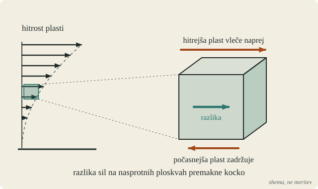
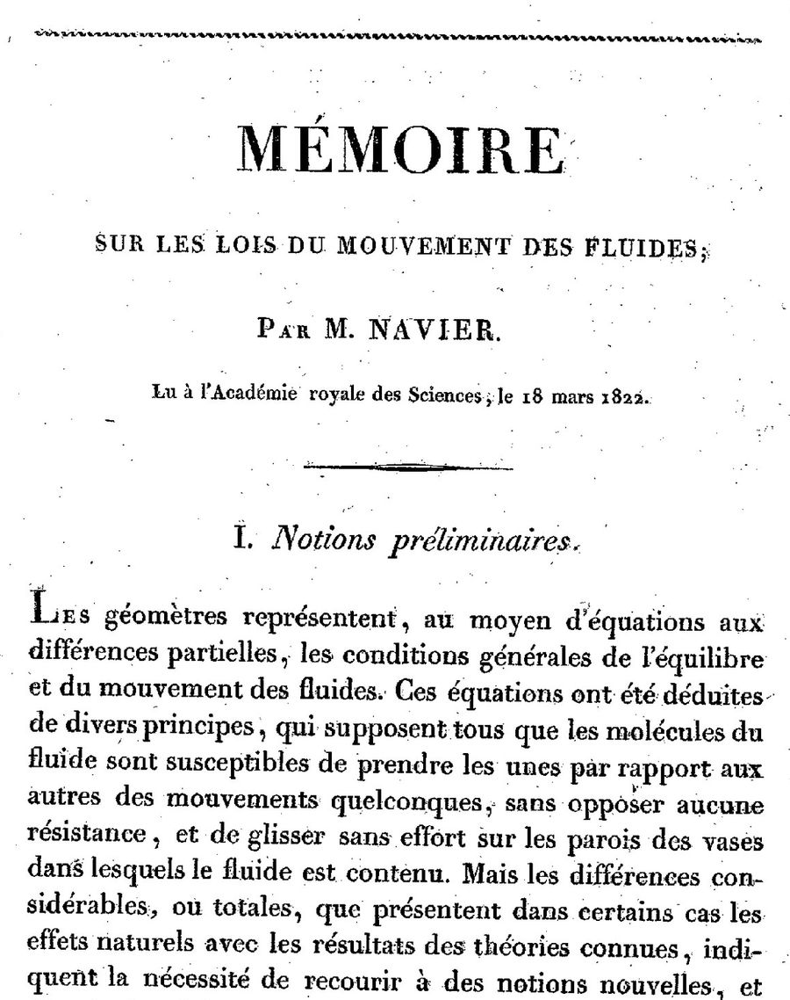
Viri (4)
C.-L. Navier, Mémoire sur les lois du mouvement des fluides, Mém. Acad. Sci. 6 (1827), Wikisource · On the development of the Navier–Stokes equation by Navier (Revista Brasileira de Ensino de Física) · P.-S. Girard, Mémoire sur l'écoulement linéaire… par des tubes capillaires de verre (1817), Wikisource · MacTutor: Claude-Louis Navier3. dejanje · 1822–1843 · Pariz
Brez molekul
Zgodba
Spor o konstantah
Pariz, 1843. Zdaj si Adhémar Barré de Saint-Venant, rojen 23. avgusta 1797. Tako kot Navier si inženir korpusa za ceste in mostove. Že 14. aprila 1834 si Akademiji predstavil razpravo o dinamiki tekočin. Navierovo delo dobro poznaš.
Navierova enačba ni ostala sama. Augustin Cauchy je 30. septembra 1822 na Akademiji predstavil pojem napetosti: sile na majhno ploskev znotraj telesa, ki ni nujno pravokotna nanjo. Leta 1828 je zapisal enačbe za »trdnino brez prožnosti«, ki imajo enako obliko kot Navierove, a jih ni ponudil kot teorijo tekočin. Siméon Denis Poisson je leta 1829 iz drugačnih domnev o molekulah dobil enačbo z dvema konstantama. Naviera ni omenil.
Navier je umrl 21. avgusta 1836. Kdo ima prav? Koliko konstant ima voda? In ali so molekule, ki jih nihče ni videl, sploh potrebne?
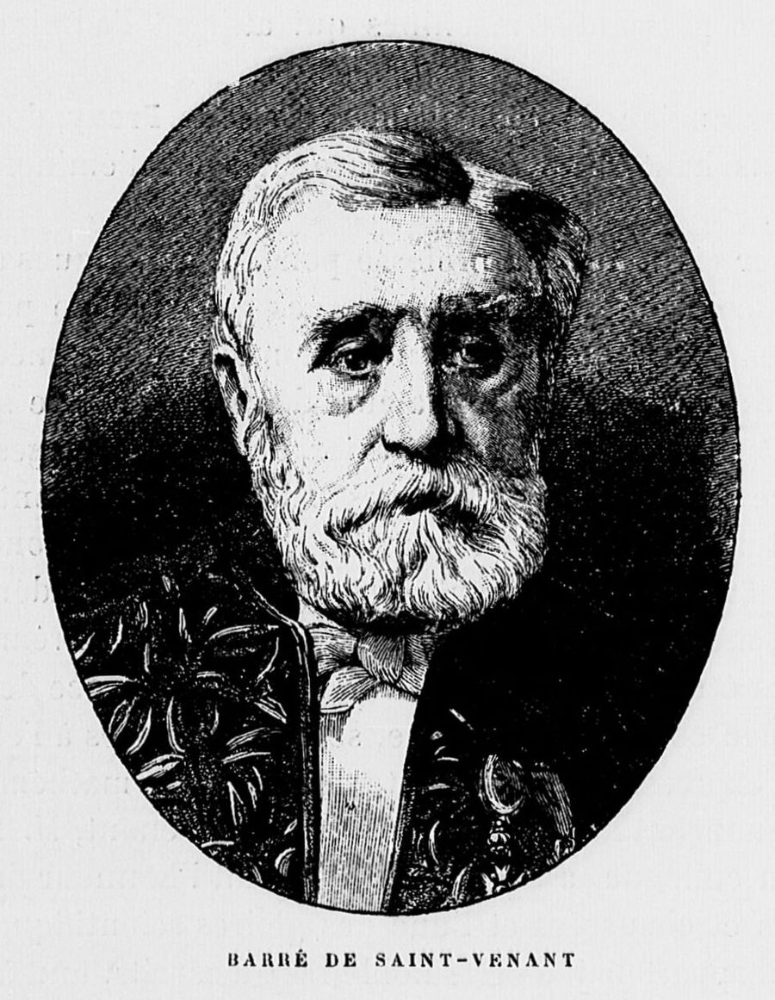
Viri (4)
MacTutor: Adhémar Jean Claude Barré de Saint-Venant · Joseph Boussinesq's legacy in fluid mechanics (Comptes Rendus Mécanique, 2017; tudi o Saint-Venantu) · G. G. Stokes, Mathematical and Physical Papers, zv. 1 (1880) · MacTutor: Claude-Louis NavierIzziv
Enačba brez molekul
Kaj bi naredil ti, zdaj, s tem, kar imaš? Navierova konstanta izhaja iz sil med molekulami, ki jih nihče ni videl. Poisson je z drugačnimi domnevami o molekulah dobil enačbo z dvema konstantama. Ali lahko enačbo za trenje dobiš brez domnev o molekulah? Katere domneve so nujne?
Tvoj odgovor → napiši ga vodniku igre v polje »Tvoje sporočilo« v panelu na levi (na telefonu spodaj). Piši s svojimi besedami, tudi pol ideje ali grobo skico je dovolj. Vodnik te bo vprašal naprej, namig pa dobiš samo, če ga prosiš.
Namig 1
Kaj vse lahko počne majhna kocka vode v toku? Naštej načine, kako se giblje in spreminja.
Namig 2
Cauchy je pri trdninah vzel napetost sorazmerno z raztezkom. Kaj, če je pri tekočini napetost sorazmerna s hitrostjo raztezanja? In koliko konstant ostane, če je tekočina v vseh smereh enaka?
Razkritje
Saint-Venant 1843 in Stokes 1845
Leta 1843 je Saint-Venant v zapisku za Comptes Rendus izpeljal enačbe brez molekul. Strižna napetost je sorazmerna s hitrostjo drsenja plasti, s konstanto, ki jo lahko izmeriš. Dobil je Navierove enačbe in Navierju priznal prednost.
Dve leti pozneje, 14. aprila 1845, je v Cambridgeu 25-letni George Gabriel Stokes prebral razpravo o notranjem trenju tekočin. Gibanje majhnega delčka je razstavil na premik, vrtenje kot celota in deformacijo. Trenje povzroča samo deformacija; delček, ki se samo vrti kot togo telo, se ne drgne. Vzel je napetost, ki je linearna v hitrosti deformacije, in tekočino, ki je v vseh smereh enaka. Ostali sta dve konstanti. Za enakomerno raztezanje je privzel, da ne povzroča trenja, zato je ostala ena. Pri nestisljivi tekočini druga tako ali tako ne vpliva.
Stokes je pozneje zapisal, da je šele potem našel Poissonovo delo, ki je prišlo do istih enačb, in v opombi omenil tudi Naviera. V 23 letih je bila ista enačba izpeljana petkrat, neodvisno: Navier 1822, Cauchy 1828, Poisson 1829, Saint-Venant 1843 in Stokes 1845. Danes nosi imeni prvega in zadnjega.
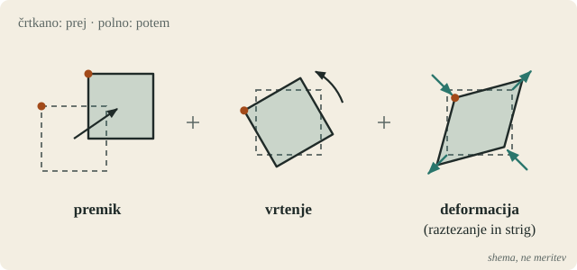
Viri (4)
MacTutor: Adhémar Jean Claude Barré de Saint-Venant · Joseph Boussinesq's legacy in fluid mechanics (Comptes Rendus Mécanique, 2017; tudi o Saint-Venantu) · Transactions of the Cambridge Philosophical Society 8 (Stokes 1845, natisnjeno 1847) · G. G. Stokes, Mathematical and Physical Papers, zv. 1 (1880)4. dejanje · april 1845 · Cambridge
Ob steni
Zgodba
Cambridge, 1845
Zdaj si George Gabriel Stokes. Rodil si se 13. avgusta 1819 v Skreenu na Irskem. Leta 1841 si bil najboljši na zaključnem izpitu iz matematike v Cambridgeu (Senior Wrangler) in dobil prvo Smithovo nagrado. Postal si štipendist kolidža Pembroke. Star si 25 let.
Opaziš, da običajna teorija tekočin ne pozna drsenja plasti druga ob drugi. Zato ne razloži, zakaj krogla na nihalu niha vse manj na široko, in ne, koliko vode steče po akvaduktu.
Enačbo imaš. Da bi jo rešil za kakšen resničen tok, potrebuješ še pogoj ob steni: kaj tekočina počne tik ob cevi, ob dnu kanala ali ob površini telesa. Navier je dovolil delni zdrs in svojo drugo konstanto prilagodil meritvam toka skozi ozke cevi. Za cevi in kanale imaš na voljo stare meritve francoskih inženirjev.
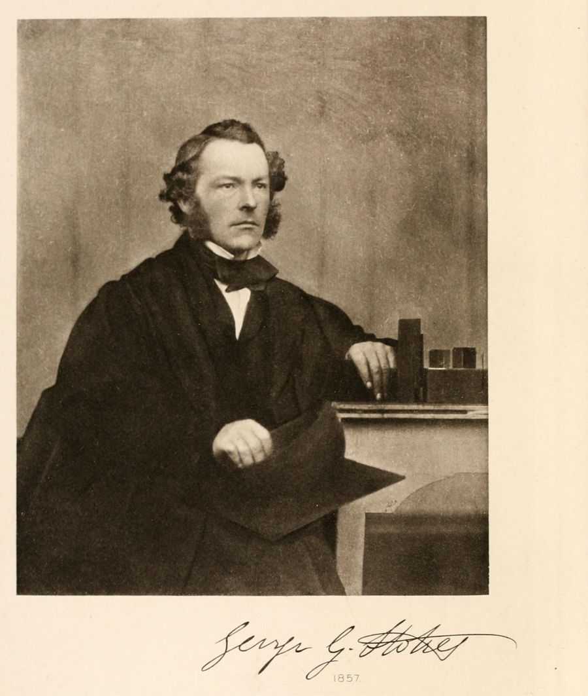
Viri (3)
MacTutor: George Gabriel Stokes · Transactions of the Cambridge Philosophical Society 8 (Stokes 1845, natisnjeno 1847) · Lauga, Brenner, Stone: Microfluidics, the no-slip boundary condition (arXiv:cond-mat/0501557)Izziv
Ob steni
Kaj bi naredil ti, zdaj, s tem, kar imaš? Enačba je, a da jo rešiš, potrebuješ še pogoj ob steni cevi ali telesa. Kaj se dogaja s tekočino tik ob steni? In s katerim poskusom bi preveril, ali imaš prav?
Tvoj odgovor → napiši ga vodniku igre v polje »Tvoje sporočilo« v panelu na levi (na telefonu spodaj). Piši s svojimi besedami, tudi pol ideje ali grobo skico je dovolj. Vodnik te bo vprašal naprej, namig pa dobiš samo, če ga prosiš.
Namig 1
Prah na krilih mlina na veter ostane, čeprav krila režejo zrak. Kaj to pove o zraku tik ob krilu?
Namig 2
Če cev zožiš na polovico, kolikokrat manj vode steče pri istem tlaku? Kaj bi pomenil odgovor 16?
Razkritje
Pogoj, ki ga Stokes odloži
Stokes je leta 1845 preizkusil pogoj, da tekočina ob steni miruje. V ravni cevi da hitrost, ki je največja v sredini in nič ob steni, ter pretok, sorazmeren s padcem tlaka in s četrto potenco polmera. Ko je rezultat primerjal s starimi meritvami v velikih ceveh in kanalih, se ni ujemal. Pogoj je zato odložil. Razlog je danes jasen: v velikih ceveh je bil tok nemiren, vrtinčast, in enačba za gladek tok zanj ne velja.
Prav takrat sta v ozkih ceveh merila Gotthilf Hagen (1839) in Jean Léonard Marie Poiseuille (1838–1846). Poiseuille, zdravnik, ki ga je zanimal tok krvi, je meril pretok vode skozi steklene kapilare in iz meritev našel prav ta zakon: pretok je sorazmeren s padcem tlaka in s četrto potenco polmera. Izpeljavo iz enačbe sta prva objavila Wiedemann leta 1856 in Hagenbach leta 1860.
Stokes je pogoj brez zdrsa sprejel leta 1851. Fiziki so o njem razpravljali do konca stoletja. Kdaj gladek tok preide v vrtinčastega, je leta 1883 pokazal Osborne Reynolds.
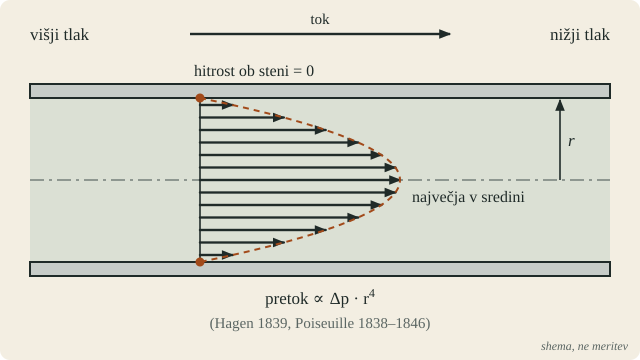
Viri (5)
Transactions of the Cambridge Philosophical Society 8 (Stokes 1845, natisnjeno 1847) · G. G. Stokes, Mathematical and Physical Papers, zv. 1 (1880) · Hagen–Poiseuillova enačba (Wikipedia, angl.) · Lauga, Brenner, Stone: Microfluidics, the no-slip boundary condition (arXiv:cond-mat/0501557) · O. Reynolds, Phil. Trans. R. Soc. 174 (1883)5. dejanje · 1850–1851 in bonus 1905 · Cambridge; Anglija
Nihalo v zraku
Zgodba
Nihala, ki prehitro obstanejo
Cambridge, 1850. Od leta 1849 si Lucasov profesor matematike, na Newtonovi katedri.
Natančne ure in merjenje težnosti slonijo na nihalih. Nihalo v zraku niha nekoliko drugače kot v praznem prostoru, zato meritve popravljajo za vpliv zraka. Friedrich Bessel (1828), Edward Sabine (1829) in Francis Baily (1832) so ta popravek izmerili. Teorija popolne tekočine napove faktor 1,5. Baily je izmeril 1,864 za kroglo s premerom poldrugega palca, 1,748 za kroglo s premerom dveh palcev in kar 7,53 za tanko žico. Manjše ko je telo, bolj se meritev razlikuje od teorije.
Viri (3)
G. G. Stokes, On the effect of the internal friction of fluids on the motion of pendulums (1851) · F. Baily, On the correction of a pendulum for the reduction to a vacuum, Phil. Trans. 122 (1832) · MacTutor: George Gabriel StokesIzziv
Počasna krogla
Kaj bi naredil ti, zdaj, s tem, kar imaš? Natančna merjenja nihal kažejo, da zrak nihalo zavira bolj, kot napove račun s popolno tekočino. Kako bi z novo enačbo ocenil upor majhne krogle, ki se počasi giblje skozi zrak ali vodo? Od česa je odvisen?
Tvoj odgovor → napiši ga vodniku igre v polje »Tvoje sporočilo« v panelu na levi (na telefonu spodaj). Piši s svojimi besedami, tudi pol ideje ali grobo skico je dovolj. Vodnik te bo vprašal naprej, namig pa dobiš samo, če ga prosiš.
Namig 1
Pri zelo počasnem gibanju krogla vode ne meče pred sabo. Kateri del enačbe je tedaj majhen? Iz katerih količin potem sestaviš silo, če ima viskoznost enoto sila krat čas na ploščino?
Razkritje
6π · μ · a · V
Stokes je razpravo o vplivu notranjega trenja na nihala prebral 9. decembra 1850, natisnjena je bila leta 1851. Pri počasnem gibanju je vztrajnost zraka zanemarljiva in enačba postane linearna. Za kroglo s polmerom a, ki se giblje s hitrostjo V skozi tekočino z viskoznostjo μ, je izračunal upor 6π · μ · a · V. Upor je sorazmeren s hitrostjo in s polmerom, ne s kvadratom hitrosti. S tem je razložil Bailyjeve številke.
V istem delu je izračunal, da kapljica vode s premerom tisočinke palca pada s hitrostjo približno 1,6 palca na sekundo, kar je okoli 4 cm/s. Zapisal je, da navidezno lebdenje oblakov povzroča predvsem notranje trenje zraka. Ob tem je sprejel tudi pogoj, da tekočina ob steni miruje.
Zakon je ostal: v letih 1909–1913 je Robert Millikan po Stokesovem zakonu iz hitrosti padanja oljnih kapljic določil njihov polmer in izmeril naboj elektrona.
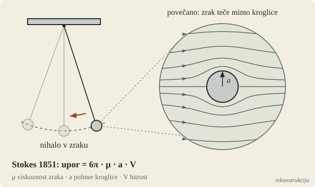
Viri (3)
G. G. Stokes, On the effect of the internal friction of fluids on the motion of pendulums (1851) · F. Baily, On the correction of a pendulum for the reduction to a vacuum, Phil. Trans. 122 (1832) · Caltech: Millikanovi zapiski o poskusu z oljnimi kapljicamiIzziv
Bonus: žogica za golf
Anglija, 1905. Golfske žogice iz gutaperče so v rabi od okoli leta 1848. Igralci so kmalu opazili, da stare, zarezane in opraskane žogice letijo dlje in bolj naravnost kot nove, gladke. Izdelovalci so jih zato začeli obdelovati s kladivom, nato pa odlivati z vzorcem. Leta 1905 ima večina žogic gumijasto jedro (patent Haskell, 1899) in površino z izboklinami. 15. septembra 1905 William Taylor prijavi patent za žogico z vdolbinicami.
Bonus, neobvezno: Zakaj hrapava žogica leti dlje kot gladka? Kaj se spremeni v toku okoli nje?
Tvoj odgovor → napiši ga vodniku igre v polje »Tvoje sporočilo« v panelu na levi (na telefonu spodaj). Piši s svojimi besedami, tudi pol ideje ali grobo skico je dovolj. Vodnik te bo vprašal naprej, namig pa dobiš samo, če ga prosiš.
Namig 1
Nariši sled za žogico. Je široka ali ozka? Kje za žogico je tlak nizek in kaj to pomeni za upor?
Razkritje
Jamice
Ludwig Prandtl je 12. avgusta 1904 v Heidelbergu pokazal, da je pri hitrem toku trenje pomembno samo v tanki plasti ob površini, v mejni plasti. Mejna plast ob zadnji strani telesa izgubi zagon, se odlepi in za telesom pusti široko sled z nizkim tlakom. Upor krogle večinoma ne izvira iz trenja ob površini, ampak iz te sledi.
Gustave Eiffel je leta 1912 izmeril, da upor krogle nad neko hitrostjo nenadoma pade. Prandtl je leta 1914 na kroglo s premerom 28 cm namestil žični obroček debeline 1 mm in upor se je zmanjšal. Žica je mejno plast naredila nemirno. Nemirna mejna plast ima ob površini več zagona, odlepi se pozneje in sled je ožja.
Vdolbinice na golfski žogici naredijo isto pri hitrostih, s katerimi žogica leti. Gladka žogica ima koeficient upora okoli 0,45–0,5, žogica z vdolbinicami okoli 0,25, torej do polovico manjši upor. Vdolbinice pri vrtenju nazaj vplivajo tudi na vzgon. Taylorjev britanski patent je bil leta 1915 razveljavljen, ker je podobna žogica obstajala že prej.
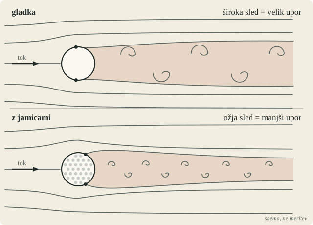
Viri (6)
L. Prandtl, Über Flüssigkeitsbewegung bei sehr kleiner Reibung (1904), German History Intersections · L. Prandtl, Der Luftwiderstand von Kugeln (1914), prevod NACA · Choi, Jeon, Choi: Mechanism of drag reduction by dimples on a sphere (2006) · Patent GB 18,668/1905 (W. Taylor) · Patent US 622,834 (Haskell in Work, 1899) · NPR: Feathers And Rubber Bands, The Story Of The Golf Ball (2012)Epilog
Enačba, ki še ni povedala vsega
Leta 1883 je Osborne Reynolds v stekleni cevi pokazal, kdaj tok s tankim curkom barvila ostane gladek in kdaj se razbije v vrtince. Recenzent njegovega članka je bil Stokes. Prandtlova mejna plast (1904) je razložila, kako lahko majhno trenje povzroči velik upor. D'Alembertov paradoks je bil s tem rešen v praksi.
Navier–Stokesove enačbe danes rabijo pri načrtovanju letal in ladij, pri napovedi vremena, pri toku krvi in v vsaki cevi. Rešujejo jih računalniki, ker jih na roke skoraj nikoli ne moreš.
Eno vprašanje je ostalo odprto. Ali gladek začetni tok vedno ostane gladek, ali pa se lahko v končnem času »zlomi«, tako da hitrost nekje postane neskončna? 24. maja 2000 ga je Clayev matematični inštitut uvrstil med sedem problemov tisočletja, z nagrado milijon dolarjev. Uradna naloga ima štiri različice; dve dovoljujeta gladko zunanjo silo.
Septembra 2026 sta Tristan Buckmaster (NYU) in Levent Alpöge (Anthropic) s pomočjo več modelov umetne inteligence, med njimi Claude, objavila v Leanu preverjene dokaze, da se 3D Eulerjev tok ob gladki zunanji sili v končnem času zlomi. Buckmaster je zapisal: »This is a Deep Blue–Kasparov moment.« Dan pozneje je OpenAI objavil dokaz za Navier–Stokesove enačbe z gladko silo, torej za različici, ki silo dovoljujeta. Sledil je spor o zaslugah; trditve obeh strani niso neodvisno preverjene. Clayev inštitut je 11. septembra zapisal, da je problem po vsem sodeč rešen, presoja pa bo namenoma neprenagljena. Članek arXiv:2610.08144 trdi, da OpenAI-jev dokaz v Leanu ne ustreza zapisanemu. Recenzirane objave še ni, nagrada ni podeljena. Stanje: oktober 2026.
V pogovoru z Brianom Greenom na World Science Festivalu je Buckmaster opisal, kako delo poteka: ideje in smer dajo ljudje, modeli napišejo dolg dokaz, Lean pa preveri vsak korak. Odprto ostaja, kdo preveri, ali izrek v Leanu res pove isto kot članek. Tudi pri Navierju in Stokesu je bila enačba prva, njeno razumevanje pa je prišlo desetletja pozneje.
Več o Eulerju: Leonhard Euler na seznamu Top ljudje.
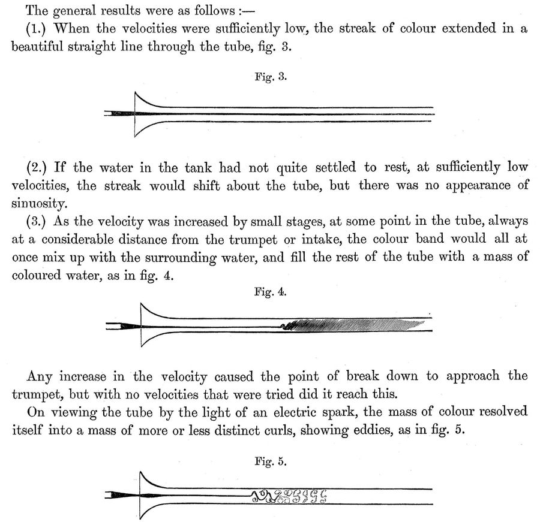